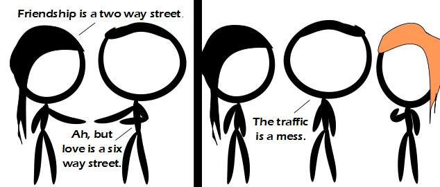

Comic JK 741
When I Feel Like It
⇤
<
?
>
⇥

⇤
<
?
>
⇥
Forum
.
RSS
.
Digg
.
Facebook
.
Reddit
.
Twitter
.
Stumbleupon
Enter your thoughts on number 741 here. Please, no spamming, trolling, phreaking, or mÈnage ‡ trois. Religion is like dorky college boys. There are thousands of them and they're mostly being controlled and exploited by your mother. HAPPY BIRTHDAY, JK Therefore, magic is a two way street. >>trrrrriple magic! Therefore love == Pakistan's road system. >hahaa...no >More like around the Arc de Triomphe. We need more special characters: ÈËÍ·‡‚ÛÚÙÌÏÓˆ‰¸fl >ø° >>Ä•£~=^[]°ø{}<>¶:);):(:'(:o:P:$:S:, .qwertyuiopsdfghkjlzzxcvbnnm!@#$%&*?/_"')(-+; ┌┬┐╔╦╗ ├┼┤╠╬╣ >>>└┴┘╚╩╝ >>>Shit, this doesn't work... X X X X X X X X X X X X X X X X X X X ▲ ▲ ▲ ▲ ▲ ▲ ▲ ▲ ▲ ▲ ▲ ▲ ▲ ▲ ▲ ▲ ▲ ▲ ▲ ▲ ▲ ▲ ▲ ▲ ▲ ▲ ▲ ▲ ▲ ▲ ▲ ▲ ▲ ▲ ▲ ▲ ▲ ▲ ▲ ▲ ▲ ▲ ▲ ▲ ▲ ▲ ▲ ▲ ▲ ▲ ▲ ▲ ▲ ▲ ▲ ▲ ▲ ▲ ▲ ▲ ▲ ▲ >Haha, you can't triforce! >> But you can "Feel the force Luke". COMICJK, Y U NO PARSE UNICODE CORRECTLY?